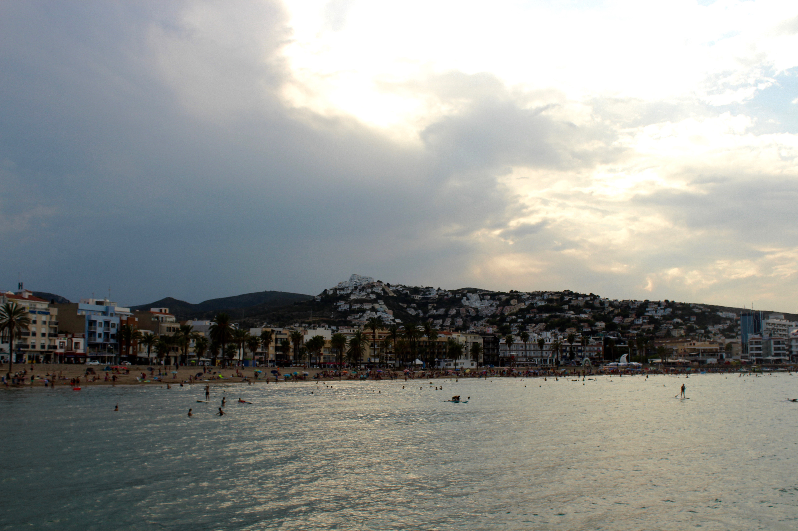
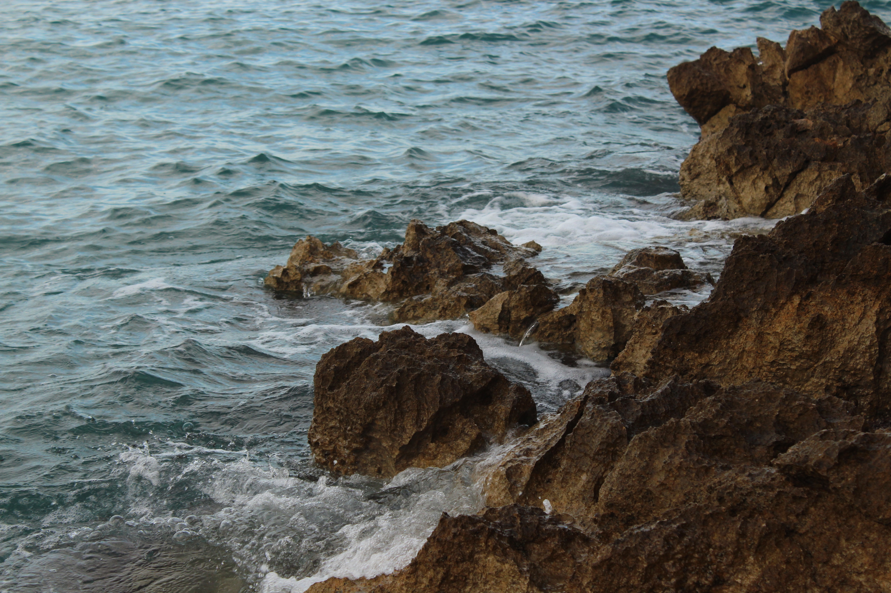
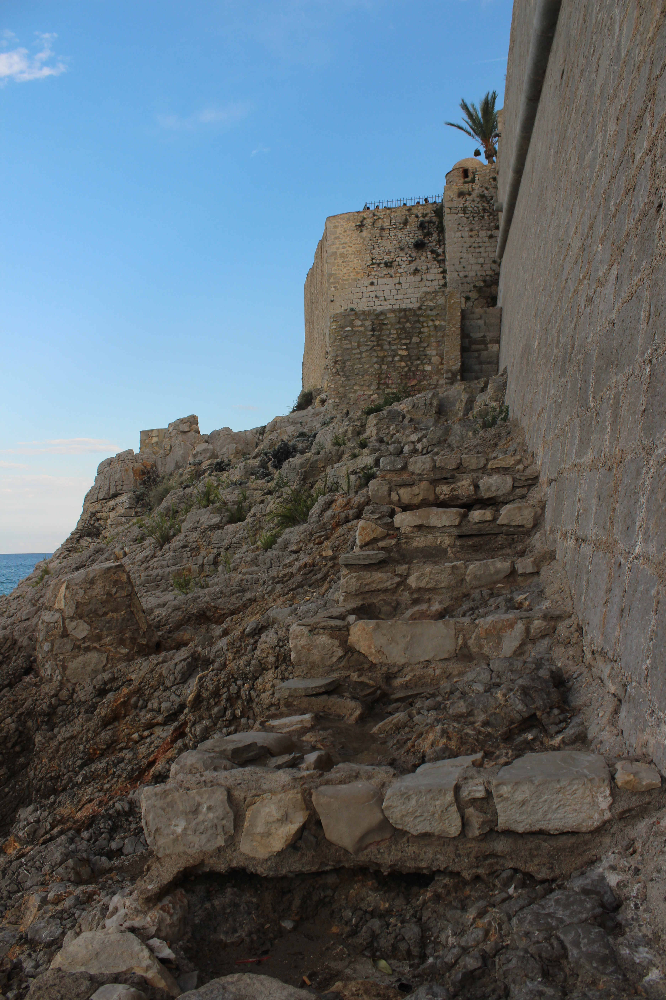
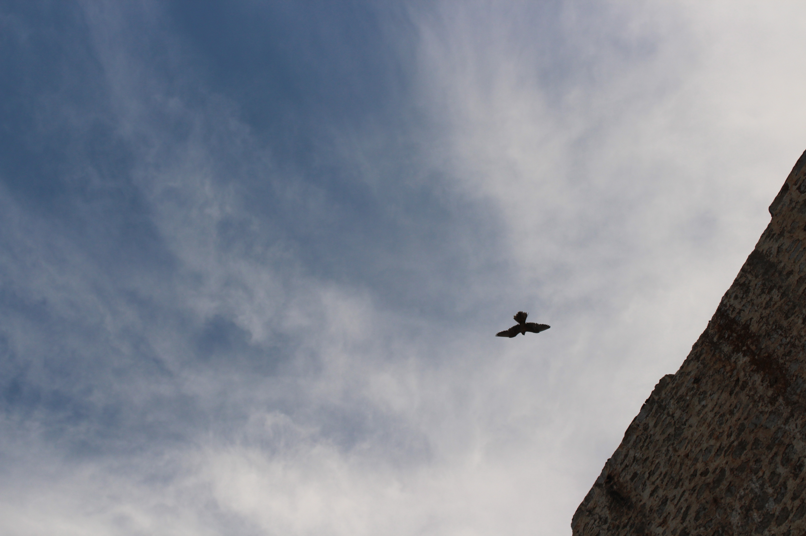

Home
Contacta con nosotros
Nuestra oferta

La ruta cinematográfica se realizará por Peñíscola, un municipio de la Comunidad Valenciana situado en la costa norte de la provincia de Castellón, en la comarca del Bajo Maestrazgo. Cuenta con una población de 7421 habitantes. Posee título de Ciudad desde 1707. Esta ruta consiste en visitar lugares y recursos de escenas cinematográficas o incluso de escenas de series, entre las que se encuentran sets de "Juego de Tronos", "Calabuch", "El Chiringuito de Pepe", o "El Cid". Puede ver la lista completa en el siguiente link.
Imagen panorámica de Peñíscola.
Fragento de la escarvada costa.
Ala este del castillo.
Espectáculo aviario.
2018. Todos los derechos reservados.
Contacta con nosotros aquí.